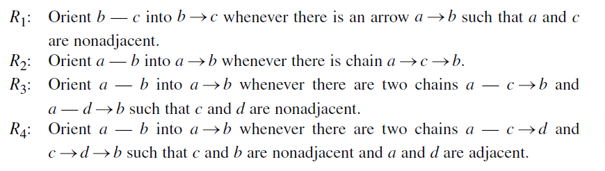
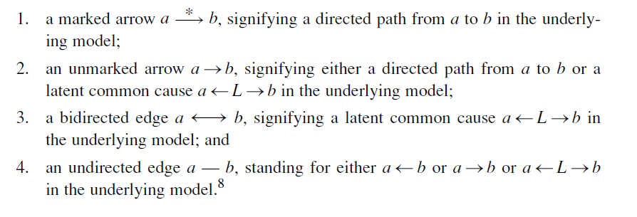
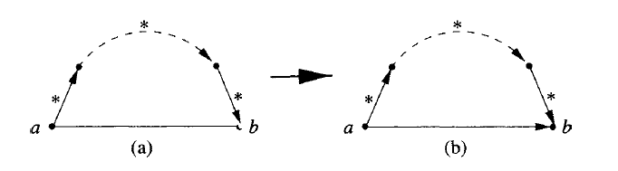

简介
从原始的统计数据学习得出因果关系从休谟（1711-1776）时代开始就一直是哲学家们的一个梦想，当20世纪80年代中期图和概率依赖性的关系逐渐被人们发现后，这种梦想开始逐渐变为现实。
在一个自主的智能系统中，我们不能让它完全依赖实现给与它的先验的因果知识，它应该像我们人类一样有从直接观察中推测出因果关系的能力。我们已经知道概率关系不能从逻辑上推出因果关系，但人类感知因果关系仍然主要通过被动的观察，我们要去探索两者之间是否有一些更弱的联系，理解并可以模拟人类从观察中了解因果的能力。
进一步，我们想解决如下问题：
1.是哪些线索让人们从被动的观察中感知到因果关系？
2.什么样的假设能允许人们从这些线索中推断出因果模型？
3.推断出的模型能告诉我们在观察结果背后的任何有用的因果信息吗？
时间顺序是我们在定义因果关系时不可缺少的一部分，也无疑是人们用来在不同类型的关联性中判断出因果的一个重要线索。但明确不变的时间顺序并不能保证因果性，比如晴雨表和降雨（晴雨表下降一定发生在降雨前，但不是造成下雨的原因）。
在本章中我们考虑的线索主要来源于统计关联模式，这些模式只能在因果方向性的角度上给出有意义的解释。比如，一个简单的例子，我们知道A和B相关，B和C相关，而A和C无关，那么因果结构只能是$A\rightarrow B \leftarrow C$。这种例子告诉我们，一些依赖模式是不需要时间信息的，是在概念上某些因果方向的特征。
在本章中，我们试图形式化这种通过统计上的依赖模式还原出因果关系的人类直觉，并介绍了试用于普通的图模型的因果发现（还原）算法。
因果发现的架构
因果发现可以看作我们和大自然的一个侦探游戏，自然给我们展示了部分细节，但隐藏了我们无法观察到的变量。我们假设自然中的因果机制符合下述的架构，并以此为基础探索因果发现的方法。
定义：因果结构（causal structure)
包含一组变量V的因果结构是一个有向无环图，每个结点对应着V中的一个不同的变量，每个箭头对应着变量之间得一个确定性的函数关系。
因果模型在因果结构的基础上，精确定义了每个变量如何被它们的父节点决定的函数关系。
定义：因果模型(causal model)
一个因果模型$M=<D,\Theta_D>$包含一个因果结构D和一个与D匹配的参数集$\Theta_D$。$\Theta_D$为每个$x_i$指定了函数关系$x_i=f_i(pa_i,u_i)$,同时为每个$u_i$指定了概率测度$P(u_i)$。
如果想让我们的因果模型保持马尔科夫性，最重要的是决定每个变量的父结点集$PA_i$,里面应该包含所有决定$x_i$的直接原因，我们被允许丢掉一些$PA_i$的变量，如果它不会影响模型中除$x_i$的其它变量。但如果有同时影响多个变量的结点被忽视，那么模型的马尔科夫性就会失去，因此我们要将它们用隐变量的形式在模型中显示的表达出来。
我们接下来的任务就是，当我们已知可观测变量集$O\subset V$和它的概率分布P(O) 时，如何还原除因果结构和因果模型。
模型中的约束原则
原则上，因为V时未知的，我们可以有无穷多个不同的模型符合给定的概率分布，它们有不同的隐变量集合和不同的因果函数关系。因此，在未加限制的情况下，科学家们无法对现象背后隐藏的机制做出任何有意义的断言。
奥卡姆剃刀
根据奥卡姆剃刀的原则，当我们发现了一个与数据一致的更简单的、不那么复杂的理论的时候，就可以排除其他的理论。一个更简单的模型可以容纳更丰富的概率分布，有更高的约束力，并且减少了数据过拟合的可能。
定义：Latent Structure(隐结构)
Latent structure L=$<D,O>$，其中D代表一个V上的因果结构，而$O\subseteq V$ 是一组包含于V的可观测变量集合。
对一组被我们观测到的变量集合O,可能有多个L与之匹配，我们更希望得到的是更简单、更本质的结构，因此，定义了如下的偏序关系。
定义：Structure Preference
一个latent structure L=$<D,O>$被认为优于另一个 L’=$<D’,O>$,记作$L\preceq L’$, 当且仅当D’可以在集合O上模拟D，这意味着，对每个$\Theta_D$,都存在一个$\Theta_{D’}’$，满足$P_{[O]}(<D’,\Theta_{D’}’>)=P_{[O]}(<D,\Theta_D>)$。$L\equiv L’$ 当且仅当$L\preceq L’$且$L\succeq L’$。
定义：Minimality
L 在一个 latent structure类$\zeta$中是最小的，当且仅当$\zeta$中没有其他成员严格地优于L。
定义：Inferred Causation
给定$\hat{P}$,如果说变量C对E有因果影响，那么在每一个与$\hat{P}$兼容的最小隐结构中，C到E都存在一条直接路径。
在奥卡姆剃刀原则的指导下，我们不能保证得到的最优模型是一定符合真实的因果机制的，但它会比其他方法得出的模型更可靠。
稳定分布
虽然最小性原则提供给了我们一个规范的原则去发现因果性，但我们仍然怀疑着生成数据的实际结构是否满足我们的最小结构。一些十分特殊的参数情况，可能使得一些看似不可能的结构也满足观测到的概率分布。
为了避免这种情况，我们引入了一个命名为稳定性的限制，它假设我们观察到的独立性都是内在的、稳定的、不随参数变化而改变的。
定义：稳定性
I(P)表示所有符合概率分布P的条件独立关系。一个因果模型M=$<D,\Theta_D>$生成一个稳定的分布，当且仅当对任意参数集合$\Theta_D’$,满足$I(P(<D,\Theta_D>))\subseteq I(P(<D,\Theta_D’>))$。
稳定性原则意味着，即使我们改变模型中的参数，原有的独立性也不会被破坏。
因果发现算法
还原DAG结构
先来考虑没有潜在变量的情况，在稳定性的假设下，每个分布都对应着唯一的最小的因果结构等价类（见笔记Ⅰ，3.4节中的定义）。我们最终可以得出一个部分有向的DAG，有向边代表在每个等价类中都存在的因果关系，无向边代表不确定性，在一些等价类中指向一个方向，而在另一些中指向另一个。
下面介绍的IC算法，接受一个稳定的概率分布$\hat{P}$为输入，并且输出一个DAG $D_0$的等价类。
IC Algorithm(Inductive Causation)
Input: $\hat{P}$,一个变量集V的稳定概率分布
Output: 一个兼容于 $\hat{P}$的模式$H(\hat{P})$
1.对V中的每组变量a和b,我们寻找一个集合$S_{ab}$使得$(a\perp b|S_{ab})$(比如，使用$\chi^2检测确定独立性$)。构造一个无向图G，当且仅当没有这样的$S_{ab}$可以被发现时，我们在图中将a和b用一条边相连。
2.对每一对有一个共同的邻接结点c的不相邻结点a和b，检查是否有$c\in S_{ab}$。如果是，不执行任何操作；否则，添加从a和b指向c的箭头($a\rightarrow c \leftarrow b$)。
3.在得到的部分有向图中，我们根据以下两个条件尽可能多的确定无向边的方向：(1)任意可选的方向可以产生一个新的v-结构；或者(2)任意可选方向可以产生一个有向的循环。
注意到上述算法的步骤1和3并没有给出具体的规范，我们可以用不同的方法去优化这两个步骤。对于步骤1，PC(1991,Peter and Clark)算法可以将有限的度的图模型的执行限制在多项式时间中。对于步骤3，想要得到可以得到的最大限度的图结构，Pearl发现以下四个规则是必要(后来被证明也是充分的)的：

还原隐结构
当在模型中加入隐变量时，给定概率分布$\hat{P}$,有无穷的隐模型都可以与之兼容，就不能再保证有一个可以与$\hat{P}$兼容的最小隐结构。
为此，我们试图再次考虑等价类的方法，将无穷降为有穷。考虑最简单的隐模型，每个隐变量必须时根结点，且有恰好两个可观测的孩子结点。我们发现对每个隐模型都可以找到一个满足上述的模型彼此依赖等价，我们将这种等价定义为投影。
定义：投影
一个隐模型$L_{[O]}=<D_{[O]},O>$定义为另一个隐模型L的投影，当且仅当：
1.$D_{[O]}$中每个未观测到的变量都不再有父结点，且恰好是两个不相邻的可观测结点的共同原因;
2.对L可以生成的每个可能的稳定的概率分布，都存在一个$L_{[O]}$可以生成的稳定的概率分布P’，使得$I(P_{[O]})=I(P’_{[O]})$
每个隐模型可以被严格证明都有一个投影存在(Verma,1993),因此，我们的搜索可以归约为寻找一个有最小结构的投影，并为每对变量之间的链接确定一个合适的类型。我们可以用一个IC*算法(IC算法的变体)来鉴别这些链接的类型，算法最后输出一个部分有向无环图，包含以下四种类型的边：

IC* Algorithm(Inductive Causation with latent variable)
Input: $\hat{P}$,一个稳定概率分布(关于某个隐结构)
Output: $core(\hat{P})$,一个被标记的结构(部分有向无环图)
步骤1、2与IC算法相同。
3.在得到的部分有向无环图中，我们根据以下两条规则尽可能多的加入箭头和对边进行标记：
R1:对每对有一个公共邻接结点c的不相邻结点a和b，如果a和c之间的箭头指向c，并且b和c之间的箭头没有指向c，那我们可以在b和c之间的链接中添加指向b的箭头，并且标记为$c\overset{*}{\rightarrow}b$。
R2:如果a和b是邻接结点，且有一条直接的路径（由严格的被标记的链接组成的路径）从a到b，那么在a和b的链接中添加指向b的箭头，如下图所示。

IC*算法的第三步中，不是确定边的方向，而是为边添加箭头，从而适应双向边的存在。
时序关系和统计时间
IC*算法产生的结构中将变量之间的联系分为了4类：有标记的单向箭头，代表真正的因果；无标记的单向箭头，代表潜在因果；双向箭头，代表虚假的因果；无向边，代表待确定的关系。
在变量X和Y之间形式化的定义前三类关系，需要有第三种变量Z的帮助。而如果X和Y之间有明确的时序关系，这种定义有简化的版本。本文中不再展开这六类定义，详情可参考《causality》2.7节。
我们可以看到时序关系做为一种不同于统计关系的信息，在我们判断因果关系的时候同样可以提供很大帮助。实际上在人类的直觉中，因果关系就要满足两个期望：时序层面上，原因的发生时间应该要先于结果；而统计层面上，我们想要一个完整的因果关系来解释所有的统计独立性。
事实上，在科学研究中，我们往往会发现这两种关系会达到统一而不会产生矛盾，我们对过去知识的了解可以使未来的变量条件独立，但反之并不会，对现在知识的了解往往并不会让过去的变量条件独立。
我们通过定义统计时间的概念，可以方便地形式化这种时序上的偏差。
定义：统计时间
给定一个经验分布P，P的一个统计时间是一种变量间的排序，这种排序至少可以符合一种与P兼容的最小因果结构。
根据我们人类生活和研究的经验，我们可以提出如下的公设或者说猜想。
公设：时序偏差
在绝大多数的自然现象中，实际的物理时间总能与至少一个统计时间相吻合。
(完)